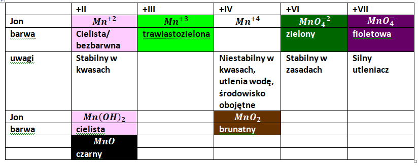
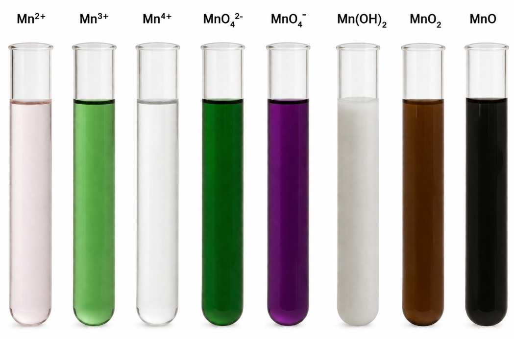
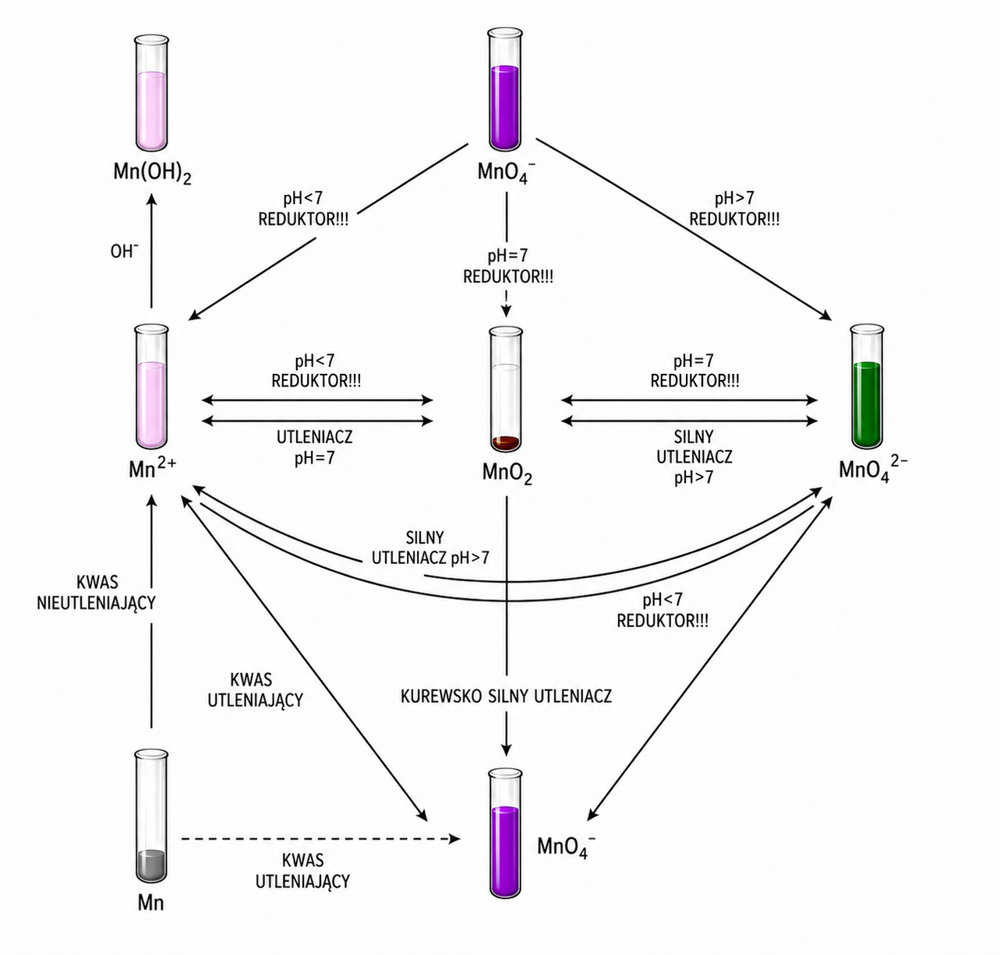
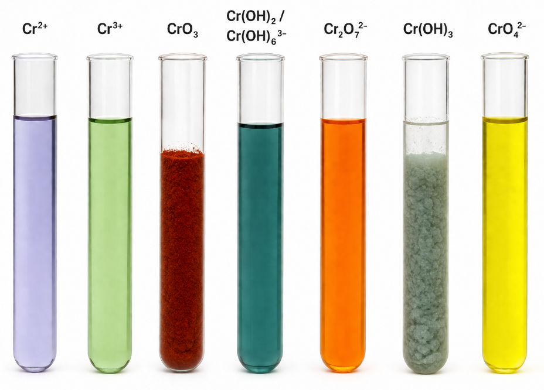
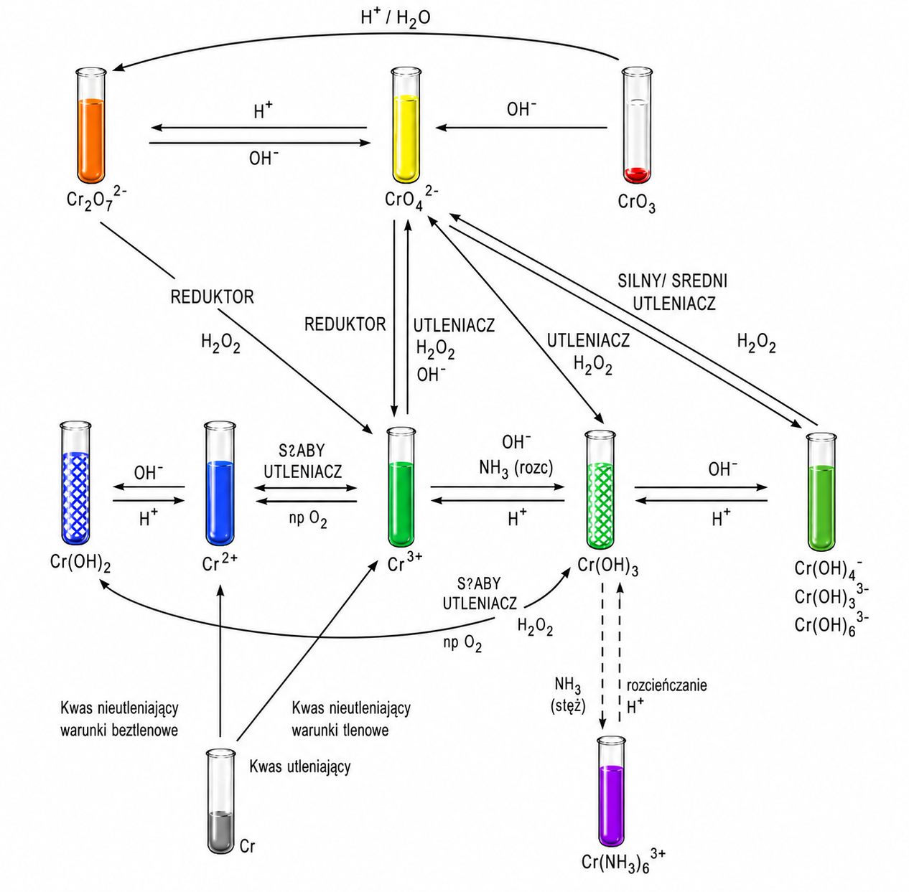
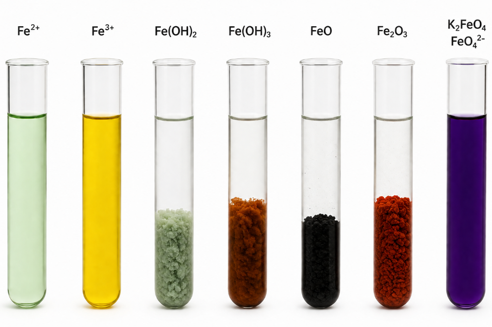

Mangan
Konfiguracja elektronowa manganu to: [Ar] 4s 2 3d 5 . Mangan ma siedem elektronów walencyjnych, a więc jego maksymalny stopień utlenienia to siedem. W praktyce występuje na stopniach utlenienia : +II, +III, +IV , +VI, +VII . Poniżej wymienione zostały typowe drobiny manganu na typowych stopniach utlenienia:


Mangan jest metalem aktywnym, o potencjale mniejszym niż \(0V\) . roztwarza się w kwasach nieutleniających z utworzeniem jonu manganu (II):
\[Mn + 2H^{+} \rightarrow Mn^{+ 2} + H_{2}\]
Mangan tworzy trzy tlenki na odpowiednio stopniu utlenienia II – \(MnO\) , \(IV - MnO_{2}\) oraz \(VII - Mn_{2}O_{7}\) . Wraz z wzrostem stopnia utleniania manganu w tlenku rosną jego własciwości utleniające oraz charakter kwasowy. \(MnO\) jest głównie redukującym tlenkiem o charakterze zasadowym, \(MnO_{2}\) jest amfoterycznym tlenkiem o charakterze amfotera redoks, a \(Mn_{2}O_{7}\) jest tlenkiem o charakterze kwasowym i właściwościach tylko utleniających. W tabeli podano przykłady reakcji tych tlenków z odpowiednio zasadami, wodą oraz kwasami; oraz z utleniaczami i reduktorami.
| Reakcja z | \[MnO\] | \[MnO_{2}\] | \[Mn_{2}O_{7}\] |
|---|---|---|---|
| Zasadowy, gl. redukujący | Amfoteryczny, redox | Kwasowy, tylko utleniający | |
| zasada | \[MnO + NaOH \rightarrow b.r\] | \[MnO_{2} + 2H_{2}O + 2NaOH \rightarrow \ Na_{2}\lbrack Mn(OH)_{6}\rbrack\] | \[Mn_{2}O_{7} + KOH \rightarrow 2KMnO_{4} + H_{2}O\] |
| \[H_{2}O\] | \[MnO + H_{2}O \rightarrow b.r.\] | \[MnO_{2} + H_{2}O \rightarrow b.r\] | \[Mn_{2}O_{7} + H_{2}O \rightarrow 2HMnO_{4}\] |
| kwas | \[MnO + HCl \rightarrow MnCl_{2} + H_{2}O\] |
\[MnO_{2} + 4HCl \rightarrow\] \[\lbrack MnCl_{4}\rbrack + H_{2}O\] Kolejno dalej idzie reakcja rozkładu \[MnCl_{4} \rightarrow MnCl_{2} + Cl_{2}\] \[MnO_{2} + 4HCl \rightarrow\] \[MnCl_{2} + 2H_{2}O + Cl_{2}\] Nawet użycie kwasu, którego nie można utlenić \(H_{2}SO_{4}\) nie pomaga, zachodzi wydzielenie tlenu \[MnO_{2} + H_{2}SO_{4} \rightarrow MnSO_{4} + \frac{1}{2}O_{2} + H_{2}O\] |
\[Mn_{2}O_{7} + H_{2}SO_{4} \rightarrow b.r\] |
| utl |
\[MnO + H_{2}O_{2} \rightarrow\] \[MnO_{2} + H_{2}O\] |
\[MnO_{2}\ + \ KNO_{3}\ + \ K_{2}CO_{3}\ \rightarrow\] \[K_{2}MnO_{4}\ + \ KNO_{2}\ + \ CO_{2}\] Jak go wrzucimy w mocno zasadowe środowisko i będziemy tlen przepuszczać \[MnO_{2} + 2OH^{-} + \frac{1}{2}O_{2} \rightarrow MnO_{4}^{2 -} + H_{2}O\] |
|
| red | \[MnO + H_{2} \rightarrow Mn + H_{2}O\] |
\[MnO_{2} + HCl \rightarrow\] \[MnCl_{2} + Cl_{2} + H_{2}O\] |
\[Mn_{2}O_{7} + H_{2}O_{2} + 4KOH \rightarrow\] \[{2K}_{2}MnO_{4} + O_{2} + {3H}_{2}O\] |
Tlenek manganu tworzy jeden tlenek mieszany, którym jest \(Mn_{3}O_{4}\ .\ \) Składa on się z dwóch cząsteczek \(MnO\) i jednej \(MnO_{2}\) czyli inaczej \(Mn_{3}O_{4} = 2MnO·MnO_{2}\)
Wodorotlenki. Mangan tworzy jeden, względnie stabilny wodorotlenek - \(Mn(OH)_{2}\) . Wodorotlenek ten ma właściwości zasadowe (reaguje z kwasem, nie reaguje z wodą i zasadą) oraz głównie redukujące. Poniżej przedstawiono przykładowe reakcje związane z tym wodorotlenkiem
| \[Mn(OH)_{2}\] | |
|---|---|
| Zasadowy, gł redukujący | |
| zasada | \[MnO + NaOH \rightarrow b.r\] |
| \[H_{2}O\] | \[ciezko\ rozp.\] |
| kwas |
\[Mn(OH)_{2} + HCl \rightarrow\] \[MnCl_{2} + 2H_{2}O\] |
| utl |
\[Mn(OH)_{2} + H_{2}O_{2} \rightarrow\] \[MnO_{2} + {2H}_{2}O\] |
| red |
\[Mn(OH)_{2} + H_{2} \rightarrow\] \[Mn + 2H_{2}O\] |
Termiczny rozkład nadmanganianu potasu:
\[2KMnO_{4} \rightarrow K_{2}MnO_{4} + MnO_{2} + O_{2}\]
Jon nadmanganianowy \(MnO_{4}^{-}\) ma silne właściwości utleniające, utlenia w większość popularnych reduktorów,. Maturalnie należy znać następujące reduktory: \(SO_{3}^{2 -};NO_{2}^{-};C_{2}O_{4}^{2 -};H_{2}O_{2};\ \) alkohole, aldehydy, jony halogenków oraz \(Mn^{2 +}\) . Poniżej przedstawiono produkty powstające z poszczególnych reduktorów po utlenieniu nadmanganianem:
\[SO_{3}^{2 -} \rightarrow SO_{4}^{2 -}\]
\[NO_{2}^{-} \rightarrow NO_{3}^{-}\]
\[C_{2}O_{4}^{2 -} \rightarrow 2CO_{2} + 2e^{-}\]
\[H_{2}O_{2} \rightarrow O_{2}\]
\[CH_{3}CH_{2}OH \rightarrow CH_{3}COOH\]
\[Cl^{-},\ Br^{-},\ I^{-} \rightarrow Cl_{2},\ Br_{2}\ I_{2}\]
\[Mn^{2 +} \rightarrow MnO_{2}\ lub\ MnO_{4}^{2 -}\ zależnie\ od\ środowiska\]
Oczywiście mogą wystąpić różne formy protonowania reagentów, tzn. \(SO_{3}^{2 -}\) może wystąpić jako \(SO_{3}^{2 -},\ HSO_{3}^{-}\) oraz \(SO_{2}\) .
Sam nadmanganian redukuje się do odpowiedniej drobiny manganu zależnie od środowiska. W środowisku kwaśny zachodzi redukcja do jonów \(Mn^{2 +}\)
\[MnO_{4}^{-} -^{H^{+}} \rightarrow Mn^{2 +}\]
Po zbilansowaniu
\[MnO_{4}^{-} + 8H^{+} + 5e^{-} \rightarrow Mn^{2 +} + 4H_{2}O\]
W obojętnym powstaje \(MnO_{2}\)
\[MnO_{4}^{-} \rightarrow MnO_{2}\]
\[MnO_{4}^{-} + 2H_{2}O + 3e^{-} \rightarrow MnO_{2} + 4OH^{-}\]
W środowisku zasadowym \(MnO_{4}^{2 -}\)
\[MnO_{4}^{-} + e^{-} \rightarrow MnO_{4}^{2 -}\]
Reakcje zachodzące po dodaniu nadmanganianu do roztworu reduktora najłatwiej jest ustalić dopierając odpowiednie półrównanie dla nadmanganianu oraz odpowiednie dla reduktora. Następnie znając półrównania ustalamy całe równanie zachodzącego procesu. Np. dodając nadmanganian do obojętnego roztworu zawierającego jony \(C_{2}O_{4}^{2 -}\) widzę iż z nadmanganianu powstaje drobina \(MnO_{2}\) , a z \(C_{2}O_{4}^{2 -}\) powstaje \(CO_{2}\) . Zapisuje więc półreakcje:
\[C_{2}O_{4}^{2 -} \rightarrow 2CO_{2} + 2e^{-}\]
\[MnO_{4}^{-} + 2H_{2}O + 3e^{-} \rightarrow MnO_{2} + 4OH^{-}\]
Całkowite równanie ma postać:
\[3C_{2}O_{4}^{2 -} + 2MnO_{4}^{-} + 4H_{2}O \rightarrow 6CO_{2} + 2MnO_{2} + 8OH^{-}\]
Należy brać pod uwagę stabilność drobin manganu w danym pH., gdyż mangan chce osiągnąć stabilną formę drobin w danym środowisku, czyli najlepiej żeby w kwaśnym było jako \(Mn^{2 +}\) ; w obojętnym \(MnO_{2}\) a w zasadowym \(MnO_{4}^{2 -}\) .Np. zalkalizowanie zawiesiny \(MnO_{2}\) w środowisku obojętnym w obecności tlenu prowadzi do postania jonów \(\ MnO_{4}^{2 -}\ \) ,bo to jest trwały jon w tym srodowisku, natomiast utleniaczem jest tu tlen. Tlen redukujemy do wody bo jak ie wiemy co powstaje z tlenu lub wodoru to piszemy wodę:
\[O_{2} \rightarrow H_{2}O\]
\[MnO_{2} \rightarrow MnO_{4}^{2 -}\]
I dalej bilansujemy jak normalną reakcje redoks.
Analogicznie zakwaszenie tlenku manganu(IV) prowadzi do jonów \(Mn^{2 +}\) i jeżeli nie mamy drobiny, którą możemy utlenić (bo np. użyliśmy kwasu siarkowego (VI) albo azotowego (V)) to ewentualnie wydzielamy \(O_{2}\) z wody. Zaczątki półreakcji mają powstać
\[MnO_{2} \rightarrow Mn^{2 +}\]
\[H_{2}O \rightarrow O_{2}\]
I dalej również bilansuje redoksem
\[MnO_{2} + 8H^{+} + 5e^{-} \rightarrow Mn^{2 +} + 4H_{2}O\]
\[2H_{2}O \rightarrow O_{2} + 4H^{+} + 4e^{-}\]
Jeżeli jednak zakwaszę kwasem solnym, obecne w układzie będą jony \(Cl^{-}\) , które już utlenić mogę, i to ich używam zamiast wody:
\[MnO_{2} \rightarrow Mn^{2 +}\]
\[Cl^{-} \rightarrow Cl_{2}\]
Następnie bilansuje używając metody redoks:
\[MnO_{2} + 8H^{+} + 5e^{-} \rightarrow Mn^{2
+} + 4H_{2}O\]
\[2Cl^{-} \rightarrow Cl_{2} + 2e^{-}\]
Zmieszanie roztworów zawierających dwa różne jony manganu (np. \(Mn^{2 +}\) i \(MnO_{4}^{-}\) ) skutkuje reakcją synproporcjonacji i otrzymaniem drobin manganu albo na +IV stopniu utlenienia w środowisku obojętnym, albo na +VI stopniu utlenienia w środowisku zasadowym.
W środowisku obojętnym stabilnym manganem jest tlenek manganu (IV) i to on będzie powstawał, zaczątki półreakcji mają postać:
\[Mn^{2 +} \rightarrow MnO_{2}\]
\[MnO_{4}^{-} \rightarrow MnO_{2}\]
Natomiast w środowisku alkalicznym stabilnym manganem jest \(MnO_{4}^{2 -}\) , więc to on będzie powstawał
\[Mn^{2 +} \rightarrow MnO_{4}^{2 -}\]
\[MnO_{4}^{-} \rightarrow MnO_{4}^{2 -}\]
Możemy też rozważyć reakcje utlenienia \(SO_{3}^{2 -}\) w różnych środowiskach. W środowisku kwaśnym stabilne są jony \(Mn^{2 +}\) , a \(SO_{3}^{2 -}\) utlenia się do \(SO_{4}^{2 -}\) :
\[MnO_{4}^{-} + 8H^{+} + 5e^{-} \rightarrow Mn^{2 +} + 4H_{2}O\ \text{/}·2\]
\[SO_{3}^{2 -} + H_{2}O \rightarrow SO_{4}^{2 -} + 2H^{+} + 2e^{-}\ \text{/}·5\ \]
Po przemnożeniu i zsumowaniu:
\[2MnO_{4}^{-} + 16H^{+} + 10e^{-} + 5SO_{3}^{2 -} + 5H_{2}O \rightarrow 2Mn^{2 +} + 8H_{2}O + 5SO_{4}^{2 -} + 10H^{+} + 10e^{-}\]
I skróceniu
\[6H^{+} + 2MnO_{4}^{-} + 5SO_{3}^{2 -} \rightarrow 2Mn^{2 +} + 3H_{2}O + 5SO_{4}^{2 -}\]
Lub w postaci z jonami \(H_{3}O^{+}\)
\[6H_{3}O^{+} + 2MnO_{4}^{-} + 5SO_{3}^{2 -} \rightarrow 2Mn^{2 +} + 3H_{2}O + 5SO_{4}^{2 -} + 6H_{2}O\]
Aby zapisać tę reakcję w formie cząsteczkowej, to już musimy wiedzieć, jaki mamy kwas.
Np. dla kwasu \(H_{2}SO_{4}\) :
\[6H^{+} + 2MnO_{4}^{-} + 5SO_{3}^{2 -} \rightarrow 2Mn^{2 +} + 3H_{2}O + 5SO_{4}^{2 -}\]
\[3H_{2}SO_{4} + 2KMnO_{4}^{\ } + 5{Na}_{2}SO_{3}^{\ } \rightarrow 2Mn^{2 +} + 3H_{2}O + 5SO_{4}^{2 -} + 3SO_{4}^{2 -} + 2K^{+} + 10Na^{+}\]
Z dopisanych jonów składam sole obojętne
\[3H_{2}SO_{4} + 2KMnO_{4}^{\ } + 5{Na}_{2}SO_{3}^{\ } \rightarrow 2MnSO_{4} + 3H_{2}O + K_{2}SO_{4} + 5Na_{2}SO_{4}\]
Natomiast utlenienie w środowisku obojętnym powoduje reakcję, w której powstaje mi \(MnO_{2}\) ; jon \(SO_{3}^{2 -}\) również utlenia się do \(SO_{4}^{2 -}\) :
\[MnO_{4}^{-} + 4H^{+} + 3e^{-} \rightarrow MnO_{2} + {2H}_{2}O\]
\[SO_{3}^{2 -} + H_{2}O \rightarrow SO_{4}^{2 -} + 2H^{+} + 2e^{-}\]
W tym wypadku mam środowisko obojętne, w którym NIE MOGĘ MIEĆ ANI JONÓW \(H^{+}\) ANI \(OH^{-}\) PO LEWEJ STRONIE RÓWNANIA. W celu uniknięcia tego problemu zamieniam środowisko pierwszej reakcji na jony \(OH^{-}\)
\[MnO_{4}^{-} + 4H_{2}O + 3e^{-} \rightarrow MnO_{2} + {2H}_{2}O + 4OH^{-}\]
\[SO_{3}^{2 -} + H_{2}O \rightarrow SO_{4}^{2 -} + 2H^{+} + 2e^{-}\]
Dopiero te półreakcje umieszczam w arkuszu maturalnym jako rozwiązania:
\[MnO_{4}^{-} + 2H_{2}O + 3e^{-} \rightarrow MnO_{2}\ + 4OH^{-}\ \text{/}2\]
\[SO_{3}^{2 -} + H_{2}O \rightarrow SO_{4}^{2 -} + 2H^{+} + 2e^{-}\ \text{/}3\]
Po zsumowaniu dostaje:
\[2MnO_{4}^{-} + 4H_{2}O + 3SO_{3}^{2 -} + {3H}_{2}O \rightarrow 3SO_{4}^{2 -} + 6H^{+} + 2MnO_{2}\ + 8OH^{-}\]
Jony \(H^{+}\ i\ OH^{-}\) nie mogą występować razem, więc reagują do całkowitego wyczerpania jednych z nich, w myśl równania:
\[H^{+} + OH^{-} \rightarrow H_{2}O\]
\[2MnO_{4}^{-} + 4H_{2}O + 3SO_{3}^{2 -} + {3H}_{2}O \rightarrow 3SO_{4}^{2 -} + 6H^{+} + 6OH^{-} + 2MnO_{2}\ + 2OH^{-}\]
Co po zsumowaniu dostajemy:
\[2MnO_{4}^{-} + 4H_{2}O + 3SO_{3}^{2 -} + {3H}_{2}O \rightarrow 3SO_{4}^{2 -} + 6H_{2}O + 2MnO_{2}\ + 2OH^{-}\]
Skracamy wody i grupujemy i to jest dopiero zapisanie równania w formie jonowej.
\[2MnO_{4}^{-} + H_{2}O + 3SO_{3}^{2 -} \rightarrow 3SO_{4}^{2 -} + 2MnO_{2}\ + 2OH^{-}\]
I dopiero jak to napiszemy to będziemy mogli powiedzieć, czy roztwór w trakcie reakcji się zakwasza, czy alkalizuje, bo generalnie widzimy czy się powstają sumarycznie jony \(OH^{-}\) czy \(H^{+}\) .
Oczywiście tę reakcję możemy zamienić na reakcję zapisaną w formie cząsteczkowej
\[2KMnO_{4}^{\ } + H_{2}O + 3Na_{2}SO_{3}^{\ } \rightarrow 3SO_{4}^{2 -} + 2MnO_{2}\ + 2OH^{-} + 2K^{+} + 6Na^{+}\]
\[2KMnO_{4}^{\ } + H_{2}O + 3Na_{2}SO_{3}^{\ } \rightarrow 3Na_{2}SO_{4}^{\ } + 2MnO_{2}\ + 2KOH^{\ }\]
W srodowisku zasadowym już będziemy mieli normalny bilans, róznica polega na tym że trwałe w środwisku zasadowym są jony \(MnO_{4}^{2 -}\) , a nie \(MnO_{2}\) :
\[MnO_{4}^{-} + e^{-} \rightarrow MnO_{4}^{2 -}\]
\[SO_{3}^{2 -} + H_{2}O \rightarrow SO_{4}^{2 -} + 2H^{+} + 2e^{-}\]
Oczywiście tę drugą półreakcję zamieniam na środowisko zasadowe
\[MnO_{4}^{-} + e^{-} \rightarrow MnO_{4}^{2 -}\]
\[SO_{3}^{2 -} + H_{2}O + 2OH^{-} \rightarrow SO_{4}^{2 -} + 2H_{2}O + 2e^{-}\]
\[MnO_{4}^{-} + e^{-} \rightarrow MnO_{4}^{2 -}\]
\[SO_{3}^{2 -} + 2OH^{-} \rightarrow SO_{4}^{2 -} + H_{2}O + 2e^{-}\]
\[SO_{3}^{2 -} + 2OH^{-} + 2MnO_{4}^{-} \rightarrow 2MnO_{4}^{2 -} + SO_{4}^{2 -} + H_{2}O\]
I znowu możemy dopisać jony
\[K_{2}SO_{3}^{\ } + 2KOH^{\ } + 2KMnO_{4}^{\ } \rightarrow 2K_{2}MnO_{4}^{\ } + K_{2}SO_{4}^{\ } + H_{2}O\]
Reakcje, które stanowią charakterystykę danego pierwiastka i należy je pamiętać:
Zalkalizowanie jonów \(Mn^{2 +}\) powoduje wytrącenie cielistego wodorotlenku. Wodorotlenek ten jest nietrwały, jak i sam mangan na +II stopniu utlenienia, więc przy dostępie powietrza utlenia się on do \(MnO_{2}\) , co powoduje zmianę barwy na brunatną.
\[Mn^{2 +} + 2OH^{-} \rightarrow \ Mn(OH)_{2}\]
Wytrącenie różowego osadu
I potem on ciemnieje na powietrzu na skutek dostępu tlenu
\[Mn(OH)_{2} \rightarrow MnO_{2}\]
\[O_{2} \rightarrow H_{2}O\]
\[Mn(OH)_{2} \rightarrow MnO_{2} + 2H^{+} + 2e^{-}\]
\[O_{2} + 4H_{2}O + 4e^{-} \rightarrow {2H}_{2}O + 4OH^{-}\]
Półreakcje:
\[Mn(OH)_{2} \rightarrow MnO_{2} + 2H^{+} + 2e^{-}\]
\[O_{2} + 2H_{2}O + 4e^{-} \rightarrow 4OH^{-}\]
\[2Mn(OH)_{2} + O_{2} + 2H_{2}O \rightarrow 2MnO_{2} + 4H^{+} + 4OH^{-}\]
Sumarycznie:
\[2Mn(OH)_{2} + O_{2} \rightarrow 2MnO_{2} + 2H_{2}O\]
Trwałe formy manganu przedstawiono na schemacie. Należy pamiętać, że aby przeprowadzić daną reakcję należy dodać najczęściej dwóch odczynników – związku zapewniającego odpowiednie \(pH\) – kwasu lub zasady oraz utleniacza lub reduktora, zależnie od potrzeby. Klasycznym „cholernie” silnym utleniaczem jest \(PbO_{2}\) . Utlenia on wszelkie formy manganu, samemu redukując się do jonów \(Pb^{2 +}\) .

Chrom jest jednym z dwóch maturalnych pierwiastków, dla których mamy wiedzieć, że występuje promocja, posiada on konfigurację skróconą Cr: [Ar] 4s 1 3d 5 , w związku, z czym jego maksymalny stopień utlenienia wynosi 6. Typowe stopnie utlenienia chromu to +II, + III+VI , najczęściej występujące drobiny chromu przedstawiono w tabeli:
| +II | +III | +VI | |
|---|---|---|---|
| drobina | \[\mathbf{C}\mathbf{r}^{\mathbf{2 +}}\] | \[\mathbf{Cr}^{\mathbf{3 +}}\] | \[\mathbf{Cr}\mathbf{O}_{\mathbf{3}}\] |
| barwa | szaroniebieska | Zielona | ciemnoczerwony |
| uwagi | Niestabilny w obecności tlenu | ||
| Jon | \[\mathbf{Cr}\left( \mathbf{OH} \right)_{\mathbf{4}}^{\mathbf{-}}\mathbf{/Cr}\left( \mathbf{OH} \right)_{\mathbf{6}}^{\mathbf{3 -}}\] | \[\mathbf{C}\mathbf{r}_{\mathbf{2}}\mathbf{O}_{\mathbf{7}}^{\mathbf{2 -}}\] | |
| barwa | Szarozielona | pomarańczowy | |
| uwagi | Stabilny w kwasach | ||
| Jon | \[\mathbf{Cr}\left( \mathbf{OH} \right)_{\mathbf{3}}\] | \[\mathbf{Cr}\mathbf{O}_{\mathbf{4}}^{\mathbf{2 -}}\] | |
| barwa | Szarozielona | żółty | |
| uwagi | Stabilny w zasadach |

Chrom tworzy tlenki na +II; +III i +VI stopniu utlenienia, odpowiednio \(CrO;Cr_{2}O_{3}\) oraz \(CrO_{3}\) . Kwasowość tych tlenków rośnie wraz ze stopniem ich utlenienia; dodatkowo \(CrO_{3}\) posiada silne właściwości utleniające w środowisku kwaśnym, a tlenki \(CrO\) i \(Cr_{2}O_{3}\) posiadają silne właściwości redukujące w środowisku zasadowym. Spotykany jest również nadtlenek chromu \(CrO_{5}\) . Związek ten nie posiada jakby wynikało z maturalnych reguł obliczania stopnia utlenienia chromu na \(+ 10\) stopniu, tylko mostki tlenowe \(- O - O -\) .Poprawniejszy zapis tego tlenku będzie miał postać \(CrO_{2}(O - O)_{1}\) , czyli zawiera on chrom na \(VI\) stopniu utlenienia i jeden mostek tlenowy z tlenami na +I stopniu utlenienia. Typowe reakcje tlenków przedstawiono w tabeli:
| \[CrO\] | \[Cr_{2}O_{3}\] | \[CrO_{3}\] | |
|---|---|---|---|
| Zasadowy, gl. Redukujący | Amfoteryczny, gl. redukujący | Kwasowy, tylko utleniający | |
| zasada | \[CrO + NaOH \rightarrow b.r\] | \[Cr_{2}O_{3} + 3H_{2}O + 6NaOH \rightarrow \ 2Na_{3}\lbrack Cr(OH)_{6}\rbrack\] |
\[CrO_{3} + 2KOH \rightarrow\] \[2K_{2}CrO_{4} + H_{2}O\] |
| \[H_{2}O\] | \[CrO + H_{2}O \rightarrow b.r.\] | \[Cr_{2}O_{3} + H_{2}O \rightarrow b.r\] | \[2CrO_{3} + H_{2}O \rightarrow H_{2}Cr_{2}O_{7}\] |
| kwas | \[CrO + HCl \rightarrow CrCl_{2} + H_{2}O\] | \[Cr_{2}O_{3} + {3H}_{2}SO_{4} \rightarrow Cr_{2}\left( SO_{4} \right)_{3} + {3H}_{2}O\] | \[CrO_{3} + H_{2}SO_{4} \rightarrow b.r\] |
| utl |
\[2CrO + H_{2}O_{2} + {6H}^{+} \rightarrow\] \[2Cr^{3 +} + 4H_{2}O\] |
\[Cr_{2}O_{3} + 3H_{2}O_{2} + 4NaOH \rightarrow 2Na_{2}CrO_{4} + {5H}_{2}O\] | |
| red | \[CrO + H_{2} \rightarrow Cr + H_{2}O\] |
\[2CrO_{3} + 3H_{2}O_{2} + 6HCl \rightarrow\] \[2CrCl_{3} + {6H}_{2}O + 3O_{2}\] |
Inne:
Roztwarzanie w kwasach nieutleniających/ zasadach:
Chrom (metal) reaguje z kwasami i zasadami, dając odpowiednio sole chromu (II) z wydzieleniem wodoru w warunkach beztlenowych lub sole chromu (III) i wodę w warunkach tlenowych. W tym wypadku tlen jest utleniaczem, powstaje z niego woda
Warunki beztlenowe powstaje kation chromu (II) oraz wodór
\[Cr + 2HCl \rightarrow CrCl_{2} + H_{2}\]
Lub jonowo
\[Cr + 2H^{+} + 2Cl^{-} \rightarrow Cr^{2 +} + 2Cl^{-} + \ H_{2}\]
\[Cr + 2H^{+} \rightarrow Cr^{2 +} + H_{2}\]
Warunki tlenowe –powstaje kation chromu (III), uczestniczy tlen:
Zaczątkiem redoks jest:
\[Cr \rightarrow Cr^{3 +}\]
\[O_{2} \rightarrow H_{2}O\]
Bilansując półreakcje:
\[Cr \rightarrow Cr^{3 +} + 3e^{-}\]
\[O_{2} + 4H^{+} + 4e^{-} \rightarrow 2H_{2}O\]
I sumując:
\[4Cr + 12H^{+} + {3O}_{2} \rightarrow 4Cr^{3 +} + {6H}_{2}O\]
Zapis cząsteczkowy uzyskujemy dopisując po obu stronach 12 jonów \(Cl^{-}\)
\[4Cr + 12HCl + {3O}_{2} \rightarrow 4CrCl_{3} + {6H}_{2}O\]
Jednocześnie należy pamiętać, że chrom jest jednym z metali pasywujących, a więc po umieszczeniu w stężonych kwasach utleniających reakcja zachodzi tylko na powierzchni chromu z utworzeniem tlenku chromu (III).
Chrom w środowisku zasadowym roztwarza się z utworzeniem związku kompleksowego - \(Cr(OH)_{4}^{-}\) lub \(Cr(OH)_{6}^{3 -}\) w zależności od stężenia użytej zasady. W reakcji tej uczestniczy tlen – pod warunkiem, że prowadzona ona jest w jego obecności:
\[Cr \rightarrow Cr(OH)_{4}^{-}\]
\[O_{2} \rightarrow \ H_{2}O\]
Po bilansie i zamienia środowiska na zasadowe otrzymujemy półrównania:
\[Cr + 4OH^{-} \rightarrow Cr(OH)_{4}^{-} + 3e^{-}\]
\[O_{2} + 2H_{2}O + 4e^{-} \rightarrow 4OH^{-}\]
Po zsumowaniu otrzymując reakcje sumaryczną:
\[4Cr + 4OH^{-} + 3O_{2} + 6H_{2}O \rightarrow 4Cr(OH)_{4}^{-}\]
Co można zapisać również, jako reakcję całkowitą:
\[4Cr + 4NaOH + 3O_{2} + 6H_{2}O \rightarrow 4NaCr(OH)_{4}\]
W warunkach beztlenowych do utleniania chromu wykorzystujemy wodór z wody, reakcja wówczas ma postać:
\[Cr + NaOH + 3H_{2}O \rightarrow NaCr(OH)_{4} + \frac{3}{2}H_{2}\]
\[Cr + Na^{+} + OH^{-} + 3H_{2}O \rightarrow Na^{+} + Cr(OH)_{4}^{-} + \frac{3}{2}H_{2}\]
Tlenek chromu (II), czarne ciało stałe, on jest sklasyfikowany jako zasadowy, ale reaguje on tylko z kwasami, a nie z wodą:
\[CrO + HCl \rightarrow CrCl_{2} + H_{2}O\]
\[CrO + 2H^{+} + 2Cl^{-} \rightarrow Cr^{2 +} + 2Cl^{-} + H_{2}O\]
Wodorotlenek chromu (II) otrzymywany jest przez dodanie nadmiaru zasady (bądź rozcieńczonego amoniaku) do roztworu soli chromu (II)
\[CrSO_{4} + 2NaOH \rightarrow Cr(OH)_{2} + Na_{2}SO_{4}\]
\[Cr^{2 +} + SO_{4}^{2 -} + 2Na^{+} + 2OH^{-} \rightarrow Cr(OH)_{2} + 2Na^{+} + SO_{4}^{2 -}\]
\[CrSO_{4} + 2NH_{3} + 2H_{2}O \rightarrow Cr(OH)_{2} + \left( NH_{4} \right)_{2}SO_{4}\]
Wodorotlenek ten jest cieżkorozpuszczalny , reaguje on z kwasami z utworzeniem odpowiednich soli chromu (II)
\[Cr(OH)_{2} + 2HBr \rightarrow CrBr_{2} + 2H_{2}O\]
\[Cr(OH)_{2} + 2H^{+} + 2Br^{-} \rightarrow Cr^{2 +} + 2Br^{-} + 2H_{2}O\]
\[Cr(OH)_{2} + H_{2}O \rightarrow brak\ reakcji\]
\[Cr(OH)_{2} + NaOH \rightarrow brak\ reakcji\]
Ten wodorotlenek ogrzewany może dać tlenek chromu (II)
\[Cr(OH)_{2} \rightarrow CrO + H_{2}O\]
Jony chromu (II) powodują szaroniebieskie zabarwienie roztworu.
Związki chromu (II) są niestabilne w obecności słabych utleniaczy, również tlenu – łatwo ulegają reakcjom utlenienia dając związki chromu (III):
\[2Cr(OH)_{2} + H_{2}O_{2} \rightarrow 2Cr(OH)_{3}\]
\[Cr^{2 +} + O_{2} \rightarrow Cr^{3 +} + H_{2}O\]
Chrom (III) – otrzymuje przez utlenienie związków chromu (II) słabym utleniaczem lub utlenienie chromu w kwasie w obecności powietrza. Również spalanie chromu na powietrzu daje tlenek chromu (III):
\[4Cr + 3O_{2} \rightarrow 2Cr_{2}O_{3}\]
Tlenek chromu (III) jest klasycznym tlenkiem amfoterycznym, czyli reaguje z kwasami i zasadami z utworzeniem odpowiednio soli chromu (III) lub związków kompleksowych, nie reaguje natomiast z wodą:
\[Cr_{2}O_{3} + 3H_{2}SO_{4} \rightarrow Cr_{2}\left( SO_{4} \right)_{3} + {3H}_{2}O\]
\[Cr_{2}O_{3} + 6H^{+} + 3SO_{4}^{2 -} \rightarrow 2Cr^{3 +} + 3SO_{4}^{2 -} + 3H_{2}O\]
\[Cr_{2}O_{3} + H_{2}O \rightarrow brak\ reakcji\]
W reakcji z zasadami powstaje związek kompleksowy zawierający aniony \(Cr(OH)_{4}^{-}\) lub \(Cr(OH)_{6}^{3 -}\) w zależności od stężenia i ilości użytej zasady:
\[Cr_{2}O_{3} + 2NaOH + 6H_{2}O \rightarrow 2NaCr(OH)_{4}\]
\[Cr_{2}O_{3} + 2Na^{+} + 2OH^{-} + 6H_{2}O \rightarrow 2Na^{+} + 2Cr(OH)_{4}^{-}\]
\[Cr_{2}O_{3} + 6NaOH + 6H_{2}O \rightarrow 2Na_{3}Cr(OH)_{6}\]
\[Cr_{2}O_{3} + 6Na^{+} + 6OH^{-} + 6H_{2}O \rightarrow 6Na^{+} + 2Cr(OH)_{6}^{3 -}\]
Wodorotleek chromu(III) otrzymujemy z odpowiedniej soli chromu (III), przez kontrolowany dodatek zasady, w przeciwnym razie możliwe jest dalsze rozpuszczenie otrzymanego wodorotlenku z utworzeniem związku kompleksowego
\[Cr_{2}\left( SO_{4} \right)_{3} + 6NaOH \rightarrow 2Cr(OH)_{3} + 3Na_{2}SO_{4}\]
\[2Cr^{3 +} + 3SO_{4}^{2 -} + 6Na^{+} + 6OH^{-} \rightarrow 2Cr(OH)_{3} + 6Na^{+} + 3SO_{4}^{2 -}\]
\[2Cr^{3 +} + 6OH^{-} \rightarrow 2Cr(OH)_{3}\]
\[\ Cr^{3 +} + 3OH^{-} \rightarrow \ Cr(OH)_{3}\]
W celu zapewnienia odpowiedniego stężenia jonów \(OH^{-}\) jako zasady można również używać amoniaku:
\[CrCl_{3} + 3NH_{3} + 3H_{2}O \rightarrow Cr(OH)_{3} + 3NH_{4}Cl\]
\[Cr^{3 +} + 3Cl^{-} + 3NH_{3} + 3H_{2}O \rightarrow Cr(OH)_{3} + 3NH_{4}^{+} + 3Cl^{-}\]
Lub też wodorotlenek ten możemy otrzymać przez zakwaszenie odpowiedniego kompleksu z jonu OH czyli \(Cr(OH)_{4}^{-}\) lub \(Cr(OH)_{6}^{3 -}\)
\[NaCr(OH)_{4} + HCl \rightarrow NaCl + Cr(OH)_{3} + H_{2}O\]
\[Na^{+} + Cr(OH)_{4}^{-} + H^{+} + Cl^{-} \rightarrow Na^{+} + Cl^{-} + Cr(OH)_{3} + H_{2}O\]
Wodorotlenek chromu (III) ma również klasyczne właściwości amfoteryczne czyli reaguej z kwasu z utworzeniem soli i z zasadami z utworzeniem związków kompleksowych (tych co mają jony \(Cr(OH)_{4}^{-}\ \ \ \ Cr(OH)_{6}^{3 -}\) ):
\[2Cr(OH)_{3} + {3H}_{2}SO_{4} \rightarrow Cr_{2}\left( SO_{4} \right)_{3} + {6H}_{2}O\]
\[2Cr(OH)_{3} + 6H^{+} + 3SO_{4} \rightarrow 2Cr^{3 +} + 3SO_{4}^{2 -} + {6H}_{2}O\]
\[Cr(OH)_{3} + KOH \rightarrow KCr(OH)_{4}\]
\[Cr(OH)_{3} + K^{+} + OH^{-} \rightarrow K^{+} + Cr(OH)_{4}^{-}\]
\[Cr(OH)_{3} + 3NaOH \rightarrow Na_{3}\left\lbrack Cr(OH)_{6} \right\rbrack\]
\[Cr(OH)_{3} + 3Na^{+} + 3OH^{-} \rightarrow 3Na^{+} + \left\lbrack Cr(OH)_{6}^{3 -} \right\rbrack\]
Wodorotlenek chromu (III), podobnie jak większość wodorotlenków amfoterycznych, łatwo odwadnia się na skutek ogrzewania, dając odpowiedni tlenek chromu (III):
\[2Cr(OH)_{3} \rightarrow Cr_{2}O_{3} + 3H_{2}O\]
Większość związków chromu na trzecim stopniu utlenienia ma zieloną barwę, ale mogą się zdarzyć wyjątki.
Wodorotlenek chromu rozpuszcza w nadmiarze amoniaku (stężony roztwór amoniaku). Powstają wówczas amoniakalne związki kompleksowe chromu, czyli związki, w którym ligandem jest amoniak, a chrom (III) jonem centralnym:
\[Cr(OH)_{3} + 6NH_{3} \rightarrow Cr\left( NH_{3} \right)_{6}\lbrack OH\rbrack_{3}\]
\[Cr(OH)_{3} + 6NH_{3} \rightarrow Cr\left( NH_{3} \right)_{6}^{3 +} + 3OH^{-}\]
Kompleks \(Cr\left( NH_{3} \right)_{6}^{3 +}\) ma fioletową barwę.
Wodorotlenek chromu (III), związki kompleksowe chromu \(Cr(OH)_{4}^{-}\) i \(Cr(OH)_{6}^{3 -}\) jak i sole chromu po dodaniu zasady (w sumie to i tak się zrobi wodorotlenek lub związki kompleksowe) utleniają się wodą utlenioną lub silnymi utleniaczami (np. \(Cl_{2}\) ) w środowisku alkalicznym dając jon chromianowy \(CrO_{4}^{2 -}\) . Reakcje te są klasycznymi przykładami reakcji redoks dla chromu i zarówno olimpiada jak i matura je uwielbiają:
Utlenianie wodorotlenku chromu przy użyciu wody utlenionej:
\[Cr(OH)_{3} \rightarrow CrO_{4}^{2 -}\]
\[H_{2}O_{2} \rightarrow H_{2}O\]
Po zbilansowaniu:
\[Cr(OH)_{3} + 5OH^{-} \rightarrow CrO_{4}^{2 -} + 4H_{2}O + 3e^{-}\]
\[H_{2}O_{2} + 2e^{-} \rightarrow 2OH^{-}\]
Sumarycznie:
\[2Cr(OH)_{3} + 4OH^{-} + 3H_{2}O_{2} \rightarrow 2CrO_{4}^{2 -} + 12H_{2}O\]
Utlenianie heksahydroksychromu(III) przy użyciu wody utlenionej:
\[Cr(OH)_{6}^{3 -} \rightarrow CrO_{4}^{2 -}\]
\[H_{2}O_{2} \rightarrow H_{2}O\]
Po zbilansowaniu
\[Cr(OH)_{6}^{3 -} + 2OH^{-} \rightarrow CrO_{4}^{2 -} + 4H_{2}O + 3e^{-}\]
\[H_{2}O_{2} + 2e^{-} \rightarrow 2OH^{-}\]
Sumarycznie:
\[2Cr(OH)_{6}^{3 -} + 3H_{2}O_{2} \rightarrow 2CrO_{4}^{2 -} + 8H_{2}O + 2OH^{-}\]
Stabilność jonów chromu na szóstym stopniu. Chrom na +IV stopniu utlenienia tworzy dwa aniony – chromian (IV), czyli \(CrO_{4}^{2 -}\) i dwuchromian \(Cr_{2}O_{7}^{2 -}\) . \(CrO_{4}^{2 -}\) jest stabilny w zasadach i ma żółtą barwę, natomiast \(Cr_{2}O_{7}^{2 -}\) stabilny w kwasach i ma barwę pomarańczową. Jony te mogą w siebie przechodzić na skutek zmiany pH w roztworze. Na przykład dodatek kwasu do jonu \(CrO_{4}^{2 -}\) prowadzi do reakcji:
\[2Na_{2}CrO_{4} + H_{2}SO_{4} \rightarrow Na_{2}Cr_{2}O_{7} + Na_{2}SO_{4} + H_{2}O\]
\[4Na^{+} + 2CrO_{4}^{2 -} + 2H^{+} + SO_{4}^{2 -} \rightarrow 2Na^{+} + Cr_{2}O_{7}^{2 -} + 2Na^{+} + SO_{4}^{2 -} + H_{2}O\]
\[2CrO_{4}^{2 -} + 2H^{+} \rightarrow \ Cr_{2}O_{7}^{2 -}\]
Obserwujemy zmianę barwy roztworu z żółtej na pomarańczową, co potwierdza stabilność \(Cr_{2}O_{7}^{2 -}\ \) w środowisku kwaśnym
Analogicznie zalkalizowanie \(Cr_{2}O_{7}^{2 -}\) prowadzi do przekształceniem go w jon \(CrO_{4}^{2 -}\)
\[Na_{2}Cr_{2}O_{7} + 2NaOH \rightarrow 2Na_{2}CrO_{4}\]
\[2Na^{+} + Cr_{2}O_{7}^{2 -} + 2Na^{+} + 2OH^{-} \rightarrow 4Na^{+} + 2CrO_{4}^{2 -}\]
\[Cr_{2}O_{7}^{2 -} + 2OH^{-} \rightarrow 2CrO_{4}^{2 -}\]
Obserwujemy wówczas zmianę barwy z pomarańczowej (jony \(Cr_{2}O_{7}^{2 -}\) ) na żółtą (jony \(CrO_{4}^{2 -}\) ). Potwierdza to stabilność jonów \(CrO_{4}^{2 -}\) w środowisku zasadowym.
Jon \(Cr_{2}O_{7}^{2 -}\) w środowiu kwaśnym ma silne właściwości utleniające redukując się do jonu \(Cr^{3 +}\) , w związku, z czym dodanie reduktora do jonu zakwaszanego roztworu \(Cr_{2}O_{7}^{2 -}\) - pomarańczowego powoduje zmianę utlenienie tegoż reduktora i redukcję \(Cr_{2}O_{7}^{2 -}\) do zielonego \(Cr^{3 +}\) . Typowe reduktory stosowane do redukcji \(Cr_{2}O_{7}^{2 -}\) są bardzo zbliżone do tych stosowanych przy manganie:
\[NO_{2}^{-} \rightarrow NO_{3}^{-}\]
\[SO_{3}^{2 -} \rightarrow SO_{4}^{2 -}\]
\[Br^{-} \rightarrow Br_{2}\]
\[I^{-} \rightarrow I_{2}\]
\[H_{2}O_{2} \rightarrow O_{2}\]
\[C_{2}H_{5}OH \rightarrow CH_{3}COOH\]
Ta ostatni reakcja stosowana jest w alkomacie w celu badania zawartości alkoholu w wydychanym powietrzu. Podczas tego procesu dwuchromian redukuje się do jonów chromu (III), a etanol utlenia się do kwasu octowego, co można zapisać schematycznie, jako:
\[Cr_{2}O_{7} \rightarrow Cr^{3 +}\]
\[C_{2}H_{5}OH \rightarrow CH_{3}COOH\]
Po zbilansowaniu półreakcji dostajemy:
\[Cr_{2}O_{7} + 14H^{+} + 6e^{-} \rightarrow 2Cr^{3 +} + 7H_{2}O\]
\[C_{2}H_{5}OH + H_{2}O \rightarrow CH_{3}COOH + 4H^{+} + 4e^{-}\]
I wymnożeniu otrzymujemy pełną reakcję:
\[2Cr_{2}O_{7} + 16H^{+} + 3C_{2}H_{5}OH \rightarrow 4Cr^{3 +} + 7H_{2}O + 3CH_{3}COOH\]
Podczas zachodzenia tego procesu widać, że redukcji ulega pomarańczowy jon \(Cr_{2}O_{7}^{2 -}\) , otrzymujemy zielony \(Cr^{3 +}\) . Spektrofotometr – urządzenie wykrywające intensywność barwy – ocenia jak duża ilość dichromianu przereagowała przez pomiar intensywności barwy pomarańczowej.
Również woda utleniona reaguje z dichromianem, w reakcji zachowuje się ona jak reduktor, utleniając się do tlenu. Reakcje te bilansujemy metodą redoks:
\[H_{2}O_{2} \rightarrow O_{2}\]
\[Cr_{2}O_{7}^{2 - \ } \rightarrow Cr^{3 +}\]
Po zbilansowaniu heteroatomów, tlenu oraz wodoru i ładunku:
\[H_{2}O_{2} \rightarrow O_{2} + 4H^{+} + 4e^{-}\]
\[Cr_{2}O_{7}^{2 - \ } + 14H^{+} + 6e^{-} \rightarrow 2Cr^{3 +} + 7H_{2}O\]
Sumarycznie:
\[3H_{2}O_{2} + 2Cr_{2}O_{7}^{2 - \ } + 16H^{+} \rightarrow 3O_{2} + 4Cr^{3 +} + 14H_{2}O\]
Reakcja nietypowa, które należy znać na maturę to rozpad termiczny dwuchromianu amonu:
\[\left( NH_{4} \right)_{2}Cr_{2}O_{7} \rightarrow N_{2} + 2Cr(OH)_{3} + H_{2}O\]
Lub bardziej z odwodnieniem powstającego wodorotlenku chromu:
\[\left( NH_{4} \right)_{2}Cr_{2}O_{7} \rightarrow N_{2} + Cr_{2}O_{3} + 4H_{2}O\]
Trwałe formy chromu

przedstawiono na schemacie:Woda utleniona NA ZASADOWO utlenia chrom (III) do chromu (VI)
\[2Cr(OH)_{4}^{-} + 3H_{2}O_{2} + 2OH^{-} \rightarrow 2CrO_{4}^{2 -} + 8H_{2}O\]
Na kwaśno woda utleniona redukuje dwuchromiany do chromu (III)
\[Cr_{2}O_{7}^{2 -} + H_{2}O_{2} \rightarrow O_{2} + Cr^{3 +}\]
Żelazo posiada konfigurację elektronową: Fe: [Ar] 4s 2 3d 6 . z uwagi na dużą ilość elektronów walencyjnych – osiem , nie jest możliwe osiągnięcie stopnia utlenienia osiem przez żelazo (chyba – jest jeden artykuł , który mówi inaczej, ale należy go na potrzeby matury olać) . Klasycznymi, maturalnie występującymi są stopnie utlenienia: +II, + III,+ V, +VI . Typowe związki żelaza przedstawiono w tabeli:
| +II | +III | +VI | |
|---|---|---|---|
| Jon | \[\mathbf{F}\mathbf{e}^{\mathbf{2 +}}\] | \[\mathbf{Fe}^{\mathbf{3 +}}\] |
\[\mathbf{K}_{\mathbf{2}}\mathbf{Fe}\mathbf{O}_{\mathbf{4}}\] \[\mathbf{Fe}\mathbf{O}_{\mathbf{4}}^{\mathbf{2 -}}\mathbf{\ }\] |
| barwa | jasnozielona | żółtobrunatna | Fioletowy |
| uwagi | Niestabilny w obecności tlenu | Dużo barwnych kompleksów | Niestabilny w wodzie |
| Jon | \[\mathbf{Fe}\left( \mathbf{OH} \right)_{\mathbf{2}}\] | \[\mathbf{Fe}\left( \mathbf{OH} \right)_{\mathbf{3}}\] | |
| barwa | jasnozielona | pomarańczowobrązowa | |
| jon | \[\mathbf{FeO}\] | \[\mathbf{F}\mathbf{e}_{\mathbf{2}}\mathbf{O}_{\mathbf{3}}\] | |
| barwa | czarny | rdzawoczerwony |

Podczas roztwarzanis żelaza w kwasach nieutleniających przy braku obecności tlenu otrzymujemy jony \(Fe^{2 +}\) oraz wydzielenie wodoru:
\[Fe + 2HCl \rightarrow FeCl_{2} + H_{2}\]
\[Fe + 2H^{+} + 2Cl^{-} \rightarrow Fe^{2 +} + 2Cl^{-} + H_{2}\]
\[Fe + 2HCl \rightarrow FeCl_{2} + H_{2}\]
Również podczas korozji powstaje najpierw wodorotlenek żelaza na drugim stopniu utlenienia - \(Fe(OH)_{2}\) :
\[Fe + H_{2}O + \frac{1}{2}O_{2} \rightarrow Fe(OH)_{2}\]
W kolejnym etapie dla soli dobrze rozpuszczalnych żelaza (II) możliwe jest utlenienie tych jonów tlenem z powietrza do żelaza (III):
\[4Fe^{2 +} + O_{2} + 4H^{+} \rightarrow 4Fe^{3 +} + 2H_{2}O\]
W środowisku obojętnym i zasadowym nie możemy mieć \(H^{+}\) z lewej strony (bo jak jak ich tam nie ma), więc przerabiamy to na zasadowo, tak jak w reakcji redoks, więc:
\[4Fe^{2 +} + O_{2} + 2H_{2}O \rightarrow 4Fe^{3 +} + 4OH^{-}\]
Reakcje utlenienia dla związków ciężkorozpuszczalnych również zachodzą, jednak zwykle wolniej i dzieje się to na ich powierzchni
\[4Fe(OH)_{2} + O_{2} + 2H_{2}O \rightarrow 4Fe(OH)_{3}\]
Lub dla \(Fe(OH)_{2}\)
\[4Fe(OH)_{2} + O_{2} + 2H_{2}O \rightarrow 4Fe(OH)_{3}\]
Równie dobrze możemy używać silnych utleniaczy takich jak \(MnO_{4}^{-}\) i \(\ Cr_{2}O_{7}^{2 -}\)
Czyli ogólnie żelazo (II) powoli się utlenienia do żelaza(III), jeżeli jest dostęp powietrza.
Związki żelaza (II) łatwo jest utlenić wodą utlenioną
\[2Fe(OH)_{2} + H_{2}O_{2} \rightarrow 2Fe(OH)_{3}\]
Lub też dobrze rozpuszczalne:
\[2Fe^{2 +} + H_{2}O_{2} + 2H^{+} \rightarrow 2Fe^{3 +} + 2H_{2}O\]
Żelazo i reakcje z halogenami.
Halogeny fluor, chlor, brom oraz jod mają różne potencjały redukcji. Wszystkie one przy dobraniu właściwych stosunków molowych będą utleniać żelazo z utworzeniem odpowiednich soli żelaza (II), np.
\[Fe + Cl_{2} \rightarrow FeCl_{2}\]
\[Fe + I_{2} \rightarrow FeI_{2}\]
W przypadku użycia nadmiaru fluoru, chloru oraz bromu możliwe jest utlenienie żelaza do żelaza(III), gdyż potencjał ich jest większy od potencjału układu \(Fe^{3 +} + e^{-} \rightarrow Fe^{2 +}\)
\[2Fe + 3Cl_{2} \rightarrow 2FeCl_{3}\]
\[2Fe + 3Br_{2} \rightarrow 2FeBr_{3}\]
Dla jodu reakcja ta przebiega inaczej potencjał układu \(Fe^{3 +} + e^{-} \rightarrow Fe^{2 +}\) jest większy niż potencjał \(I_{2} + 2e^{-} \rightarrow 2I^{-}\) , a więc można maksymalnie utlenić jodem żelazo do jonów żelaza (II), ale nie jonów żelaza (III)
\[Fe + I_{2} \rightarrow FeI_{2}\]
Dodanie nadmiaru jodu nie spowoduje zmian w tej reakcji. Z porównania potencjałów wynika, iż dodanie jodków do roztworu zawierającego jony żelaza (III) spowoduje utlenienie jodków do jodu i redukcję żelaza (III) do żelaza (II)
\[2Fe^{3 +} + 2I^{-} \rightarrow 2Fe^{2 +} + I_{2}\]
W związku, z czym nie jest możliwe otrzymanie jodku żelaza (III), związek ten jest niestabilny
Analogiczny problem jest z jonami żelaza oraz miedzią. Potencjał miedzi jest większy niż potencjał żelaza (II), a więc jony miedzi utleniają żelazo do żelaza (II)
\[Cu^{2 +} + Fe \rightarrow Fe^{2 +} + Cu\]
Jednak potencjał układu \(Fe^{3 +} + e^{-} \rightarrow Fe^{2 +}\) jest większy od potencjału miedzi, więc jony żelaza (III) utleniają miedź do jonów miedzi (II), same redukując się do jonów żelaza (II)
\[2Fe^{3 +} + Cu \rightarrow 2Fe^{2 +} + Cu^{2 +}\]
Reakcję tę stosuje się przy trawieniu płytek miedzianych.
Oczywiście umieszczenie żelaza w roztworze żelaza (III) powoduje synproporcjonację do żelaza (II)
\[2Fe^{3 +} + Fe \rightarrow 3Fe^{2 +}\]
\[Fe_{2}\left( SO_{4} \right)_{3} + Fe \rightarrow 3FeSO_{4}\]
Wodorotlenek żelaza (III) jak każdy wodorotlenek amfoteryczny jest stosunkowo łatwo odwodnić podczas ogrzewania:
\[2Fe(OH)_{3} -^{\Delta T} \rightarrow Fe_{2}O_{3} + 3H_{2}O\]
Otrzymanie żelaza na VI stopniu utlenienia jest wymaga silnych utleniaczy takich jak chlor albo chlorany(I) i jeżeli będzie to będzie z info wst.
\[Fe_{2}O_{3} + Cl_{2} + OH^{-} \rightarrow FeO_{4}^{2 -} + Cl^{-}\]
\[Fe(OH)_{3} + Cl_{2} + OH^{-} \rightarrow FeO_{4}^{2 -} + Cl^{-}\]
Żelaza (VI) są względnie stabilne w środowisku zasadowym
Żelazo tworzy tlenek mieszany \(Fe_{3}O_{4}\) , który zbudowany jest z tlenków \(Fe_{2}O_{3}\) i \(FeO\) :
\[Fe_{3}O_{4} = Fe_{2}O_{3}·Fe\]
Żelazo ulega pasywacji pod działaniem silnych kwasów. W trakcie tego proces metal pokrywa się warstwą tlenków, która blokuje dostęp do żelaza w środku. Reakcja wówczas nie zachodzi, choć poprawniejszym określeniem jest, że zachodzi na powierzchni.
Właściwości tlenków
Tlenek żelaza (II) \(FeO\) jest czarnym ciałem stałym, które reaguje z kwasami, nie reaguje z wodą i zasadami. W reakcji z kwasami tworzy odpowiednie sole żelaza (II)
\[FeO + 2HBr \rightarrow FeBr_{2} + H_{2}O\]
Jonowo:
\[FeO + 2H^{+} + 2Br^{-} \rightarrow Fe^{2 +} + 2Br^{-} + 2H_{2}O\]
\[3FeO + 2H_{3}PO_{4} \rightarrow Fe_{3}\left( PO_{4} \right)_{2} + 3H_{2}O\]
Jonowo
\[3FeO + 2H_{3}PO_{4} \rightarrow \ Fe_{3}\left( PO_{4} \right)_{2} + 3H_{2}O\]
Podobne właściwości ma tlenek żelaza (III), jest on ciałem stałym o barwie rdzawej. Ulega on reakcji również tylko z kwasami otrzymujemy wówczas sole żelaza (III) i odpowiedniej reszty kwasowej, reakcja z wodą i zasadami nie zachodzi.
\[Fe_{2}O_{3} + 6HCl \rightarrow 2FeCl_{3} + 3H_{2}O\]
\[Fe_{2}O_{3} + 6H^{+} + 6Cl^{-} \rightarrow 2Fe^{3 +} + 6Cl^{-} + 3H_{2}O\]
\[Fe_{2}O_{3} + 3H_{2}SO_{4} \rightarrow Fe_{2}\left( SO_{4} \right)_{3} + 3H_{2}O\]
\[Fe_{2}O_{3} + 6H^{+} + 3SO_{4}^{2 -} \rightarrow 2Fe^{3 +} + 3SO_{4}^{2 -} + 3H_{2}O\]
\[4Fe_{2}\left( SO_{4} \right)_{3} \rightarrow 8Fe^{3 +} + 12SO_{4}^{2 -}\]
\[Fe_{2}O_{3} + 2H_{3}PO_{4} \rightarrow 2FePO_{4} + 3H_{2}O\]
Wodorotlenki żelaza otrzymujemy głównie metodą strąceniową, dodając zasady – jonów \(OH^{-}\) do jakiej dobrze rozpuszczalnej soli żelaza (II) lub (III), tak aby wodorotlenek żelaza był jedynym źle rozpuszczalnym związkiem.
\[FeCl_{2} + 2KOH \rightarrow Fe(OH)_{2} \downarrow + 2KCl\]
\[Fe^{2 +} + 2Cl^{-} + 2K^{+} + 2OH^{-} \rightarrow Fe(OH)_{2} + 2K^{+} + 2Cl^{-}\]
\[Fe_{2}\left( SO_{4} \right)_{3} + 3Ba(OH)_{2} \rightarrow 2Fe(OH)_{3} \downarrow + 3BaSO_{4} \downarrow\]
\[2Fe^{3 +} + 3SO_{4}^{2 -} + 3Ba^{2 +} + 6OH^{-} \rightarrow 2Fe(OH)_{3} \downarrow + 3BaSO_{4} \downarrow\]
Reagenty należy dobrać, tak, aby tylko wodorotlenek był źle rozpuszczalny, bo inaczej nie będzie możliwy ich rozdział przez odsączenie – na sączku zostaną oba ciężko rozpuszczalne reagenty.
\[Fe_{2}\left( SO_{4} \right)_{3} + 6KOH \rightarrow 2Fe(OH)_{3} \downarrow + 3K_{2}SO_{4}\]
\[2Fe^{3 +} + 3SO_{4}^{2 -} + 6K^{+} + 6OH^{-} \rightarrow 2Fe(OH)_{3} \downarrow + 6K^{+} + 3SO_{4}^{2 -}\]
Właściwości kwasowo – zasadowe obu wodorotlenków żelaza jest zbliżona – reagują one z kwasami, nie reagują z wodą i się nie rozpuszczają w niej oraz nie reagują z zasadami. Po reakcji z kwasami otrzymujemy sole na odpowiednim stopniu utlenienia żelaza.
\[2Fe(OH)_{3} + 3H_{2}SO_{4} \rightarrow Fe_{2}\left( SO_{4} \right)_{3} + 6H_{2}O\]
Zapis jonowy ma postać:
\[2Fe(OH)_{3} + 6H^{+} + 3SO_{4}^{2 -} \rightarrow 2Fe^{3 +} + 3SO_{4}^{2 -} + 6H_{2}O\]
Analogicznie dla żelaza (II)
\[Fe(OH)_{2} + 2HCl \rightarrow FeCl_{2} + 2H_{2}O\]
\[Fe(OH)_{2} + 2H^{+} + 2Cl^{-} \rightarrow Fe^{2 +} + 2Cl^{-} + 2H_{2}O\]
Wodorotlenki żelaza jak wszystkie wodorotlenki amfoteryczne rozkładają się do tlenków żelaza na odpowiednim stopniu utlenienia oraz wody
\[2Fe(OH)_{3} -^{\mathrm{\Delta}T} \rightarrow Fe_{2}O_{3} + 3H_{2}O\]
\[Fe(OH)_{2} \rightarrow FeO + H_{2}O\]
Jony żelaza (II), a szczególnie żelaza (III) mają silne właściwości kompleksotwórcze tzn. robią kompleksy, najczęściej o liczbie koordynacyjnej 6 z wieloma ligandami, należy podkreślić tu jony cyjankowe \(CN^{-}\) ; tiocyjankowe \(SCN^{-}\) oraz fluorkowe \(F^{-}\) . Związki te mają często bardzo charakterystyczne barwy:
\[Fe^{3 +} + 6CN^{-} \rightarrow Fe(CN)_{6}^{3 -}\]
Heksacyjanożelazian (III) -pomarańczowy
\[Fe^{3 +} + 6F^{-} \rightarrow FeF_{6}^{3 -}\]
Heksafluorożelazian (III) – cytrynowy
\[Fe^{3 +} + 6SCN^{-} \rightarrow Fe(SCN)_{6}^{3 -}\]
Heksatiocyjaniano żelazian (III) - krwistoczerwony
Kompleksy te są labilne, czyli dodatek ligandów innego typu powoduje otrzymanie bardziej stabilnego termodynamicznie kompleksu. Np. heksafluorożelazian (III) jest stabilniejszy niż heksatiocyjanianożelazian (III), więc dodanie jonów \(F^{-}\) do krwistoczerwonego roztworu \(Fe(SCN)_{6}^{3 -}\) powoduje otrzymanie \(FeF_{6}^{3 -}\) i tym samym zmianę barwy na cytrynową.
\[Fe(SCN)_{6}^{3 -} + 6F^{-} \rightarrow FeF_{6}^{3 -} + 6SCN^{-}\]
\[Krwistoczerwony \rightarrow cytrynowy\]
Jednak dodanie jonów \(SCN^{-}\) do cytrynowego \(FeF_{6}^{3 -}\) nie powoduje zmiany barwy roztworu i tym samym, bo kompleks ten jest bardziej stabilny niż \(Fe(SCN)_{6}^{3 -}\)
\[FeF_{6}^{3 -} + 6SCN^{-} \rightarrow brak\ reakcji\]
\[cytrynowy \rightarrow cytrynowy\]
W ten sposób można porównywać trwałość kompleksów
Poniżej przedstawiono typowe reakcje żelaza i jego związków, które ciężko jest sklasyfikować inaczej
\[3Fe + 4H_{2}O^{gaz} \rightarrow Fe_{3}O_{4} + 4H_{2}\]
\[FeCl_{3} + NaCl^{stez} \rightarrow NaFeCl_{4}\]
\[FeC_{2}O_{4}·2H_{2}O -^{\Delta T} \rightarrow FeO + CO + CO_{2} + 2H_{2}O\]
\[Fe_{2}O_{3} + K_{2}O + O_{2} \rightarrow 2KFeO_{3}\]
Żelazo tworzy również interesujące połączenia z siarką, związki te występują jako minerały- \(FeS_{2}\) –piryt oraz \(FeAsS\) -arseno piryt, związki te zbudowane są odpowiednio z jonów \(Fe^{2 +}\) i \(S_{2}^{2 -}\) oraz \(Fe^{2 +}\) orz \(AsS^{2 -}\)